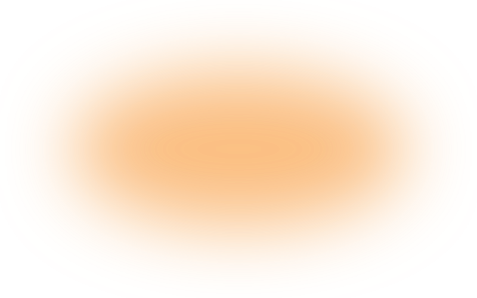
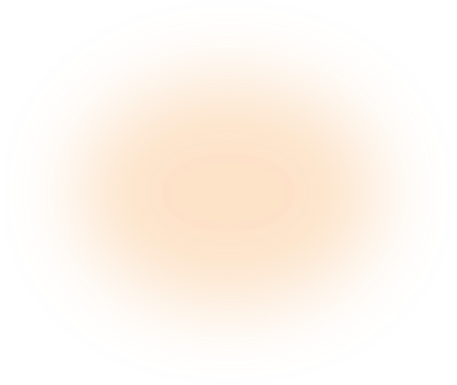

01
3,589
Members
Connect to more models. Build what’s next for applications and agents.
OpenFairy brings together unified APIs, multi-model access, service routing, and usage management, helping developers access, switch, and use AI models through one entry point for AI applications and continuously running agents.

From community participation to developer adoption, discover the growing OpenFairy ecosystem.
Members
API Keys Created
Weekly Tokens
Models Available
Leading Provider Share
AI applications and agents need flexible model choices and simpler ways to access them.
OpenFairy connects fragmented model services through one unified entry point, reducing repeated integration and configuration work so developers can focus on their products, workflows, and agents.
The OpenFairy multi-model API platform supports the complete journey from model selection and API integration to everyday usage management.


AI applications and agents need flexible model choices and simpler ways to access them.
01OpenFairy connects fragmented model services through one unified entry point, reducing repeated integration and configuration work so developers can focus on their products, workflows, and agents.
02The OpenFairy multi-model API platform supports the complete journey from model selection and API integration to everyday usage management.
 +3 more
+3 more
Connect to different model services through a unified API. Choose the right capabilities for each task while reducing separate integrations.
Keep your existing workflow. OpenFairy is compatible with the OpenAI SDK, so moving to a new model is a base URL and model name change, not a rewrite.
Route each request by capability, availability, and cost. Switch between models and services as your needs change without touching your integration.
Create API keys, set limits, and review request logs in one place, so usage across every model and provider stays visible and under control.

Connected
 Connected
Connected
 Connected
Connected
 Connected
Connected
// your existing OpenAI SDK code const client = new OpenAI({ - baseURL: "https://api.openai.com/v1", + baseURL: "https://api.openfairy.ai/v1", + apiKey: process.env.OPENFAIRY_API_KEY, }) client.chat.completions.create({ model: "gpt-4.1", messages, })
// one endpoint, every model client.chat.completions.create({ model: "gpt-4.1", base_url: "api.openfairy.ai/v1" })
Bring model capabilities to chat tools, content products, research assistants, and AI SaaS applications to move from idea to product faster.
Provide model access for research, analysis, and automation, working alongside developers’ existing task orchestration and execution logic.
Configure model services in tools that support custom APIs, with the flexibility to choose models for different development needs.
Configure separate API keys and usage limits for different applications, and review request logs centrally to simplify everyday management.
Connect your wallet, become a Fairy Member, participate in community activities, follow product updates, and explore more models and use cases.
Join OpenFairyChoose a model, create an API key, and bring intelligence to your applications and agents.